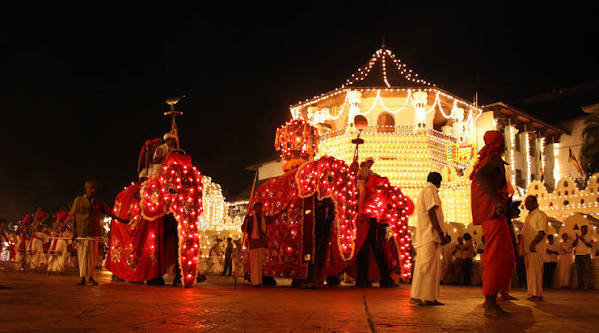

01
ADVENTURE
Into the highlands
Take on scenic trails, discover dramatic viewpoints and enjoy the thrill of exploring Sri Lanka's hill country.
Discover destinationsFrom the highlands to the coastline, explore a few ways to experience the island. Choose an interest and start imagining your journey.
Browse trip ideasWhether you are looking for a little adventure or a slower escape, let your interests guide the way.
Take on scenic trails, discover dramatic viewpoints and enjoy the thrill of exploring Sri Lanka's hill country.
Discover destinations 02
02Look out for elephants, birds and remarkable natural landscapes across the island's wild places.
Discover destinations.jpg) 03
03Spend time beside the Indian Ocean, enjoy warm sandy shores and find your favourite coastal hideaway.
Discover destinations
04Explore historic places, local traditions, architecture and the flavours of Sri Lankan life.
Discover destinationsBring your ideas together and start shaping a trip around the places you want to see.